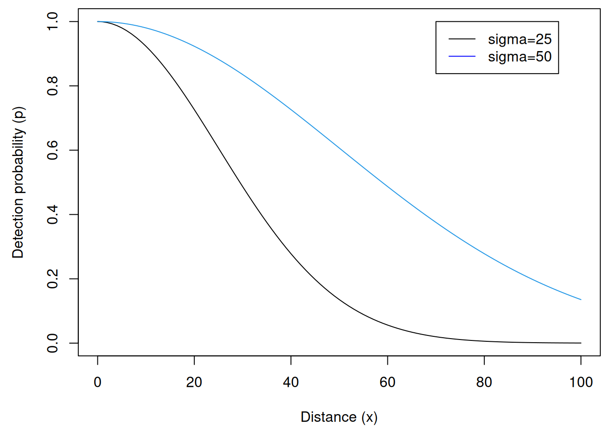
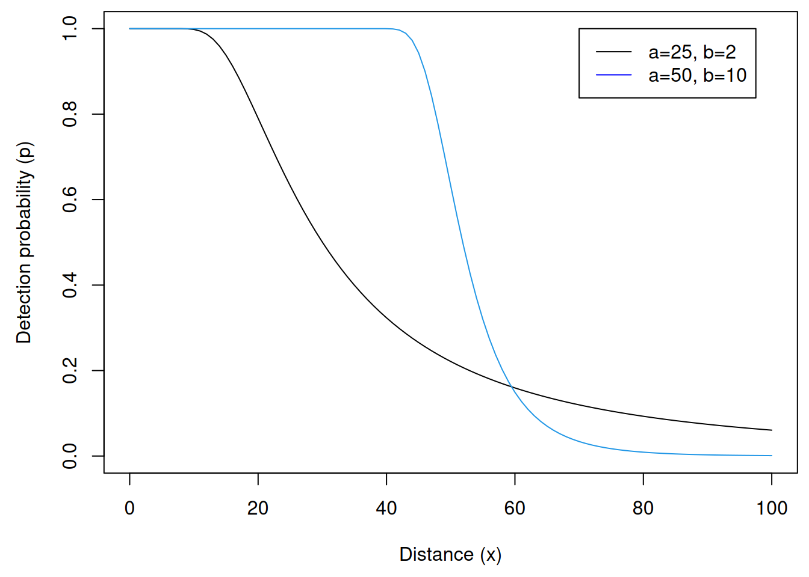
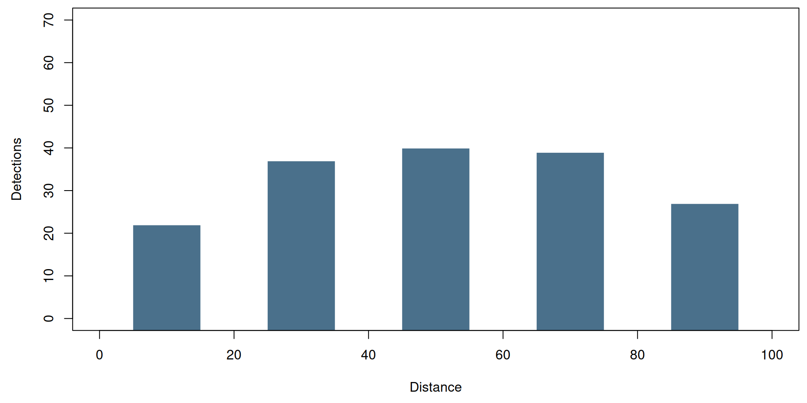
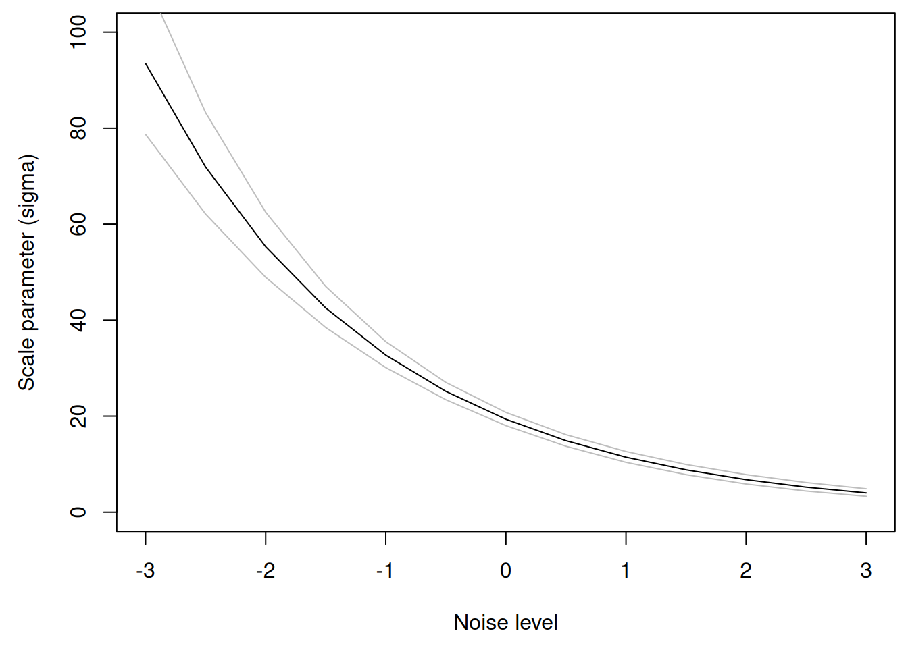
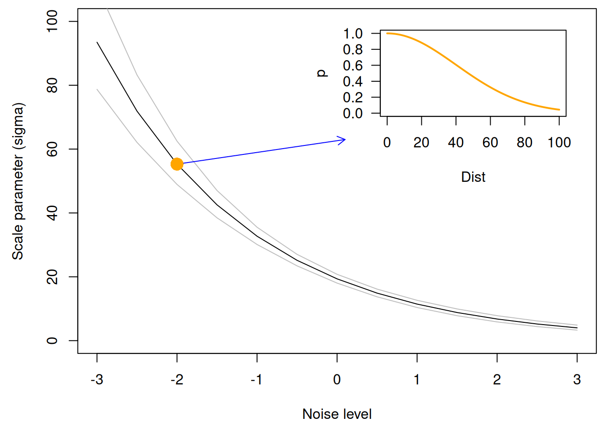
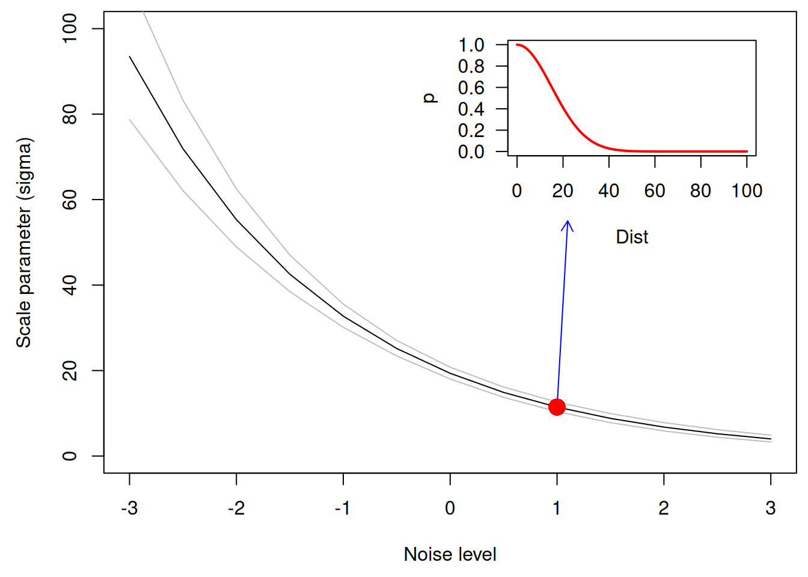
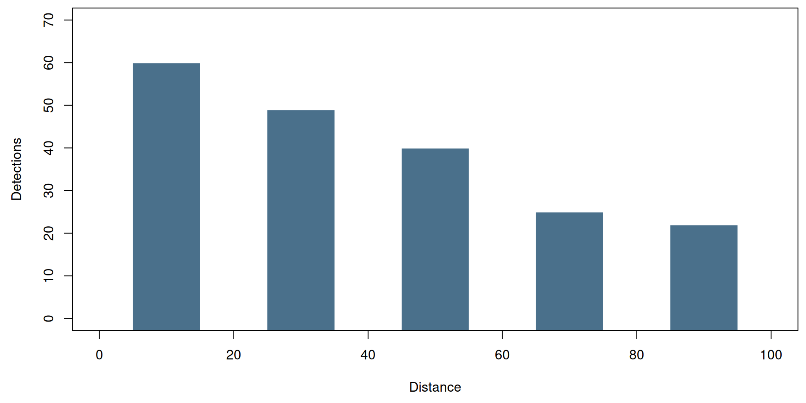
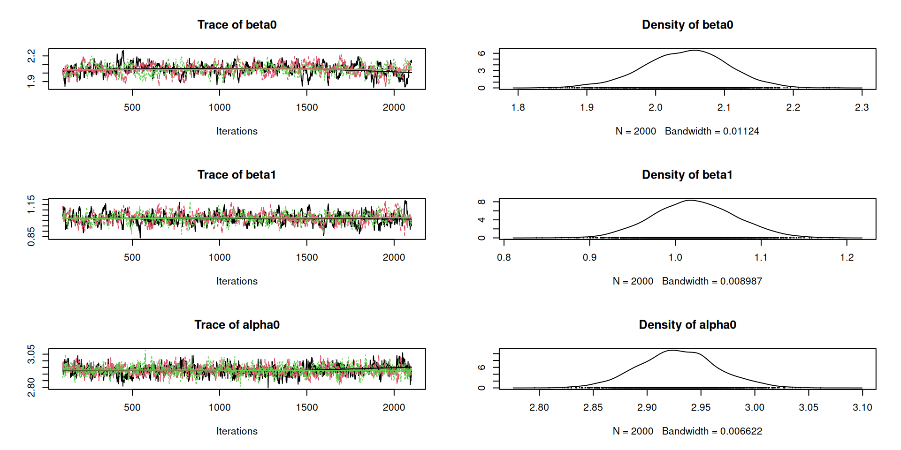
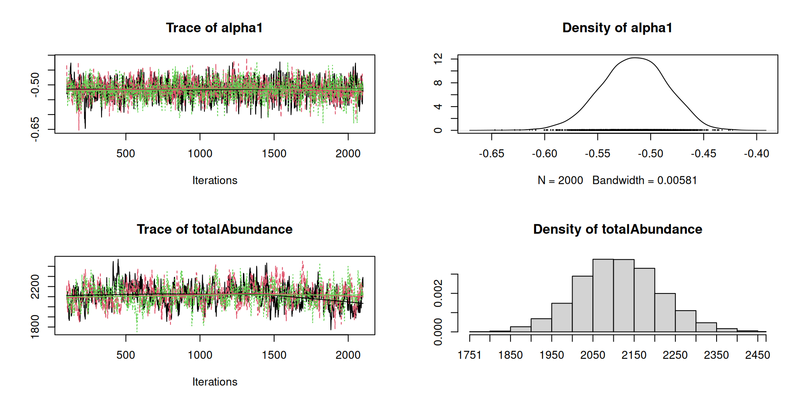

Lecture 8 – Hierarchical distance sampling:
simulation, fitting, and prediction
WILD(FISH) 8390
Inference for Models of Fish and Wildlife Population Dynamics
Distance sampling is one of the oldest wildlife sampling methods.
It’s based on the simple idea that detection probability should decline with distance between an animal and a transect.
If we can estimate the function describing how \(p\) declines with distance \(x\), we can estimate abundance… if certain assumptions hold, as always.
The simplest estimator of abundance is \[ \hat{N} = \frac{n}{\hat{p}} \] where \(n\) is the number of individuals detected, \(p\) is detection probability, and \(E(n)=Np\).
In distance sampling, detection probability is a function of distance, rather than a constant, such that all individuals have unique detection probabilities.
As a result, we have to replace \(p\) with average detection probability: \[ \hat{N} = \frac{n}{\hat{\bar{p}}} \]
How do we compute average detection probability (\(\bar{p}\))?
To estimate average detection probability (\(\bar{p}\)), we need:
The most common detection functions are:
| Detection function | \(g(x)\) |
|---|---|
| Half normal | \(\exp(-x^2 / (2\sigma^2))\) |
| Negative exponential | \(\exp(-x/\sigma)\) |
| Hazard rate | \(1-\exp(-(x/a)^{-b})\) |
\[ g(x,\sigma) = \exp(-x^2/(2\sigma^2)) \]
\[ g(x,\sigma) = \exp(-x/\sigma) \]
\[ g(x,a,b) = 1-\exp(-(x/a)^{-b}) \]
a1 <- 25; a2 <- 50; b1 <- 2; b2 <- 10
plot(function(x) 1-exp(-(x/a1)^(-b1)), from=0, to=100,
xlab="Distance (x)", ylab="Detection probability (p)", ylim=0:1)
plot(function(x) 1-exp(-(x/a2)^(-b2)), from=0, to=100, add=TRUE, col=4)
legend(70, 1, c("a=25, b=2", "a=50, b=10"), lty=1, col=c("black","blue"))
Regardless of the chosen detection function, average detection probability is defined as: \[ \bar{p} = \int_{0}^{B} g(x)p(x) \; \mathrm{d}x \] where \(B\) is the width of the transect.
All that remains is the specification of \(p(x)\), the distribution of distances (between animals and the transect).
To understand why \(p(x)\) is needed, think about it this way:
What distribution should we use for the distances between animals and transects?
In line-transect sampling, it is often assumed that animals are uniformly distributed with respect to the transect.
In point-transect sampling, we make the same assumptions, but we recognize that area increases with distance from a point.
Half-normal detection function and line-transect sampling.
Do the integration
31.3% chance of detecting an individual within 100 m.
Half-normal detection function and point-transect sampling.
Do the integration
12.5% chance of detecting an individual within 100 m.
Conventional distance sampling
Hierarchical distance sampling
State model (with Poisson assumption) \[ \mathrm{log}(\lambda_i) = \beta_0 + \beta_1 {w_{i1}} + \beta_2 {w_{i2}} + \cdots \\ N_i \sim \mathrm{Poisson}(\lambda_i) \]
Observation model \[ \mathrm{log}(\sigma_{i}) = \alpha_0 + \alpha_1 {w_{i1}} + \alpha_2 {w_{i3}} + \cdots // \{y_{i1}, \dots, y_{iK}\} \sim \mathrm{Multinomial}(N_i, \pi(x, \sigma_i)) \]
Definitions
::: {style=‘font-size: 60%;’} \(\lambda_i\) – Expected value of abundance at site \(i\)
\(N_i\) – Realized value of abundance at site \(i\)
\(\sigma_{i}\) – Scale parameter of detection function \(g(x)\) at site \(i\)
\(\pi(x,\sigma_i)\) – Function computing multinomial cell probs
\(y_{ij}\) – count for distance bin \(j\) (final count is unobserved)
\(w_1\), \(w_2\), \(w_3\) – site covariates % %
:::
Definitions needed for computing \(\bar{p}\) and multinomial cell probabilities.
\begin{tabular}{lc}
\hline
Description & Multinomial cell probability <br>
\hline
Pr(occurs and detected in first distance bin) & $\pi_1 = \psi_1\bar{p}_1$ <br>
Pr(occurs and detected in second distance bin) & $\pi_2 = \psi_2\bar{p}_2$ <br>
{ $\cdots$} & $\cdots$ <br>
Pr(occurs and detected in last distance bin) & $\pi_J = \psi_J\bar{p}_J$ <br>
Pr(not detected) & $\pi_{K} = 1-\sum_{j=1}^J \pi_j$ <br>
\hline
\end{tabular}Abundance
Multinomial cell probabilities
J <- 5 # distance bins
sigma <- 50 # scale parameter
b <- seq(0, B, length=J+1) # distance break points
area <- pi*b^2 # area of each circle
psi <- (area[-1]-area[-(J+1)]) / area[J+1]
pbar3 <- numeric(J) # average detection probability
pi3 <- numeric(J+1) # multinomial cell probs
for(j in 1:J) {
pbar3[j] <- integrate(function(x) exp(-x^2/(2*sigma^2))*x,
lower=b[j], upper=b[j+1])$value *
(2*pi/diff(area)[j])
pi3[j] <- pbar3[j]*psi[j] }; pi3[J+1] <- 1-sum(pi3[1:J])Detections in each distance interval

Abundance
Multinomial cell probabilities
noise <- rnorm(nSites)
alpha0 <- 3; alpha1 <- -0.5
sigma4 <- exp(alpha0 + alpha1*noise)
pi4 <- matrix(NA, nSites, J+1) # multinomial cell probs
for(i in 1:nSites) {
for(j in 1:J) {
pi4[i,j] <- integrate(function(x) exp(-x^2/(2*sigma4[i]^2))*x,
lower=b[j], upper=b[j+1])$value*(2*pi/diff(area)[j])*psi[j] }
pi4[i,J+1] <- 1-sum(pi4[i,1:J]) } Detections in each distance interval
Observations
[,1] [,2] [,3] [,4] [,5]
[1,] 0 0 0 0 0
[2,] 1 5 1 0 0
[3,] 0 0 0 0 0
[4,] 0 1 1 1 0
[5,] 1 0 0 0 0
[6,] 0 1 2 2 5
[7,] 0 0 1 0 0
[8,] 5 5 0 0 0
[9,] 4 2 2 0 0
[10,] 1 1 0 0 0
[11,] 2 0 1 0 0
[12,] 0 0 0 0 0
[13,] 3 0 0 0 0
[14,] 2 1 0 0 0
[15,] 0 1 0 0 1
[16,] 2 0 0 0 0
[17,] 0 0 0 0 0
[18,] 1 1 0 0 0
[19,] 0 1 0 0 0
[20,] 1 2 0 0 0
[21,] 1 0 3 2 2
[22,] 0 0 0 0 0
[23,] 0 1 0 0 0
[24,] 0 0 0 0 0
[25,] 0 0 0 0 0Note the new arguments.
unmarkedFrameDS Object
point-transect survey design
Distance class cutpoints (m): 0 20 40 60 80 100
100 sites
Maximum number of distance classes per site: 5
Mean number of distance classes per site: 5
Sites with at least one detection: 77
Tabulation of y observations:
0 1 2 3 4 5 6 7 8 9 10
351 85 31 13 6 5 2 2 1 2 2
Site-level covariates:
elevation noise
Min. :-2.2953 Min. :-2.93845
1st Qu.:-0.7225 1st Qu.:-0.72355
Median :-0.2411 Median :-0.06353
Mean :-0.1119 Mean :-0.05248
3rd Qu.: 0.6033 3rd Qu.: 0.53973
Max. : 2.2662 Max. : 2.47751
Call:
distsamp(formula = ~noise ~ elevation, data = umf4, keyfun = "halfnorm")
Density (log-scale):
Estimate SE z P(>|z|)
(Intercept) 2.003 0.0904 22.2 7.87e-109
elevation 0.945 0.0662 14.3 3.29e-46
Detection (log-scale):
Estimate SE z P(>|z|)
(Intercept) 2.963 0.0362 81.9 0.00e+00
noise -0.525 0.0288 -18.2 5.75e-74
AIC: 677.1907
Number of sites: 100
Survey design: point-transect
Detection function: halfnorm
UnitsIn: m
UnitsOut: ha Create data.frame with prediction covariates.
Get predictions of \(\sigma\) for each row of prediction data.
View \(\sigma\) predictions

plot(Predicted ~ noise, sigma.pred, ylab="Scale parameter (sigma)",
ylim=c(0,100), xlab="Noise level", type="l")
lines(lower ~ noise, sigma.pred, col="grey")
lines(upper ~ noise, sigma.pred, col="grey")
arrows(-2, sigma.pred$Predicted[3], 0.1, 63, len=0.1, col="blue")
points(-2, sigma.pred$Predicted[3], col="orange", pch=16, cex=2)
par( fig=c(0.5,0.95,0.55,0.95), new=TRUE, las=1)#, mar=c(0,0,0,0) )
plot(function(x) exp(-x^2/(2*40^2)), 0, 100, xlab="Dist", ylab="p",
col="orange", lwd=2, ylim=c(0,1), las=1)
plot(Predicted ~ noise, sigma.pred, ylab="Scale parameter (sigma)",
ylim=c(0,100), xlab="Noise level", type="l")
lines(lower ~ noise, sigma.pred, col="grey")
lines(upper ~ noise, sigma.pred, col="grey")
arrows(1, sigma.pred$Predicted[9], 1.1, 55, len=0.1, col="blue")
points(1, sigma.pred$Predicted[9], col="red", pch=16, cex=2)
par( fig=c(0.5,0.95,0.55,0.95), new=TRUE, las=1)#, mar=c(0,0,0,0) )
plot(function(x) exp(-x^2/(2*15^2)), 0, 100, xlab="Dist", ylab="p",
col="red", lwd=2, ylim=c(0,1), las=1)
model {
# lambda.intercept ~ dunif(0, 20)
# beta0 <- log(lambda.intercept)
beta0 ~ dnorm(0, 0.1)
beta1 ~ dnorm(0, 0.1)
alpha0 ~ dnorm(0, 0.1)
alpha1 ~ dnorm(0, 0.1)
for(i in 1:nSites) {
log(lambda[i]) <- beta0 + beta1*elevation[i]
N[i] ~ dpois(lambda[i]*Area) # Latent local abundance
log(sigma[i]) <- alpha0 + alpha1*noise[i]
for(j in 1:nBins) {
## Trick to do integration for *point-transects*
pbar[i,j] <- (sigma[i]^2 * (1-exp(-b[j+1]^2/(2*sigma[i]^2))) -
sigma[i]^2 * (1-exp(-b[j]^2/(2*sigma[i]^2)))) *
2*3.141593/area[j]
pi[i,j] <- psi[j]*pbar[i,j] ## Pr(present and detected in bin j)
}
pi[i,nBins+1] <- 1-sum(pi[i,1:nBins]) ## Pr(not detected)
n[i] ~ dbin(1-pi[i,nBins+1], N[i])
y[i,] ~ dmulti(pi[i,1:nBins]/(1-pi[i,nBins+1]), n[i])
## If N~Pois(lam), then the above is equivalent to:
# for(j in 1:nBins) { y[i,j] ~ dpois(lambda[i]*pi[i,j]) }
}
totalAbundance <- sum(N[1:nSites])
}Put data in a named list
Initial values
Parameters to monitor
Definitions needed for computing \(\bar{p}\) and multinomial cell probabilities.
* $y_{ij}$ -- number of individuals detected at site $i$ in bin $j$
* $\sigma_i$ -- scale parameter of detection function $g(x)$
* $b_1, \dots, b_{J+1}$ -- Distance break points defining $J$ distance intervals
* $\bar{p}_j$ -- Average detection probability in distance bin j
* $\psi_j$ -- Pr(occuring in distance bin $j$)Abundance
Multinomial cell probabilities
J <- 5 # distance bins
sigma <- 50 # scale parameter
b <- seq(0, B, length=J+1) # distance break points
psi <- diff(b)/B # Pr(x is in bin j)
pbar1 <- numeric(J) # average detection probability
pi1 <- numeric(J+1) # multinomial cell probs
for(j in 1:J) {
pbar1[j] <- integrate(function(x) exp(-x^2/(2*sigma^2)),
lower=b[j], upper=b[j+1])$value / diff(b)[j]
pi1[j] <- pbar1[j]*psi[j]
}
pi1[J+1] <- 1-sum(pi1[1:J])Detections in each distance interval

Abundance
Multinomial cell probabilities
noise <- rnorm(nSites)
alpha0 <- 3; alpha1 <- -0.5
sigma2 <- exp(alpha0 + alpha1*noise)
pi2 <- matrix(NA, nSites, J+1) # multinomial cell probs
for(i in 1:nSites) {
for(j in 1:J) {
pi2[i,j] <- integrate(function(x) exp(-x^2/(2*sigma2[i]^2)),
lower=b[j], upper=b[j+1])$value / (b[j+1]-b[j]) * psi[j] }
pi2[i,J+1] <- 1-sum(pi2[i,1:J]) } Detections in each distance interval
Observations
[,1] [,2] [,3] [,4] [,5]
[1,] 3 2 0 0 0
[2,] 4 1 1 0 0
[3,] 6 2 3 0 0
[4,] 7 4 1 0 0
[5,] 2 2 0 0 0
[6,] 0 0 0 0 0
[7,] 1 0 0 0 0
[8,] 5 0 1 0 0
[9,] 3 7 2 0 0
[10,] 5 2 0 0 0
[11,] 4 2 0 0 0
[12,] 5 2 0 0 0
[13,] 2 1 0 0 0
[14,] 12 10 8 4 1
[15,] 3 0 0 0 0
[16,] 3 0 0 0 0
[17,] 2 0 0 0 0
[18,] 9 1 0 0 0
[19,] 7 5 4 0 0
[20,] 1 1 1 0 0
[21,] 5 4 2 1 0
[22,] 1 1 1 3 0
[23,] 3 2 0 0 0
[24,] 1 0 1 0 0
[25,] 7 8 4 1 2Note the new arguments.
unmarkedFrameDS Object
line-transect survey design
Distance class cutpoints (m): 0 20 40 60 80 100
100 sites
Maximum number of distance classes per site: 5
Mean number of distance classes per site: 5
Sites with at least one detection: 90
Tabulation of y observations:
0 1 2 3 4 5 6 7 8 9 10 11 12 15 17 19 28
308 75 39 25 12 10 6 8 6 2 2 1 1 2 1 1 1
Site-level covariates:
elevation noise
Min. :-2.15115 Min. :-2.80421
1st Qu.:-0.67921 1st Qu.:-0.83893
Median :-0.20250 Median :-0.06718
Mean :-0.07937 Mean :-0.18973
3rd Qu.: 0.60327 3rd Qu.: 0.39358
Max. : 2.03949 Max. : 1.84018
Call:
distsamp(formula = ~noise ~ elevation, data = umf, keyfun = "halfnorm")
Density (log-scale):
Estimate SE z P(>|z|)
(Intercept) 2.05 0.0611 33.5 2.00e-245
elevation 1.02 0.0489 21.0 1.82e-97
Detection (log-scale):
Estimate SE z P(>|z|)
(Intercept) 2.929 0.0369 79.4 0.00e+00
noise -0.513 0.0312 -16.5 5.68e-61
AIC: 824.6483
Number of sites: 100
Survey design: line-transect
Detection function: halfnorm
UnitsIn: m
UnitsOut: ha Compare to actual parameter values:
model {
beta0 ~ dnorm(0, 0.1)
beta1 ~ dnorm(0, 0.1)
alpha0 ~ dnorm(0, 0.1)
alpha1 ~ dnorm(0, 0.1)
for(i in 1:nSites) {
log(lambda[i]) <- beta0 + beta1*elevation[i]
N[i] ~ dpois(lambda[i]*Area) # Latent local abundance
log(sigma[i]) <- alpha0 + alpha1*noise[i]
tau[i] <- 1/sigma[i]^2
for(j in 1:nBins) {
## Trick to do integration for *line-transects*
pbar[i,j] <- (pnorm(b[j+1], 0, tau[i]) - pnorm(b[j], 0, tau[i])) /
dnorm(0, 0, tau[i]) / (b[j+1]-b[j])
pi[i,j] <- psi[j]*pbar[i,j] ## Pr(present and detected in bin j)
}
pi[i,nBins+1] <- 1-sum(pi[i,1:nBins]) ## Pr(not detected)
n[i] ~ dbin(1-pi[i,nBins+1], N[i])
y[i,] ~ dmulti(pi[i,1:nBins]/(1-pi[i,nBins+1]), n[i])
## If N~Pois(lam), then the above is equivalent to:
# for(j in 1:nBins) { y[i,j] ~ dpois(lambda[i]*pi[i,j]) }
}
totalAbundance <- sum(N[1:nSites])
}Put data in a named list
Initial values
Parameters to monitor


Assumptions
If these assumptions can be met, distance sampling is a powerful method allowing for inference about abundance and density using data from a single visit.
Create a self-contained R script or Rmarkdown file to do the following:
Fit a distance sampling model with a half-normal detection function and the following covariates to the black-throated blue warbler data ({}) in unmarked' andJAGS’:
Elevation, UTM.N, UTM.WWind, Noisebtbw0\_20, btbw20\_40, btbw40\_60, btbw60\_80, btbw80\_100Using the model fitted in `unmarked’, create two graphs of the predictions: one for density and the other for the scale parameter (\(\sigma\)).
Suggestions:
Convert response variables to matrix with
Standardize covariates
Upload your .R or .Rmd file to ELC by 5:00pm on Tuesday.